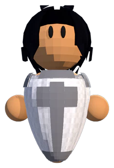
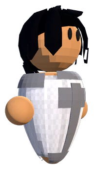
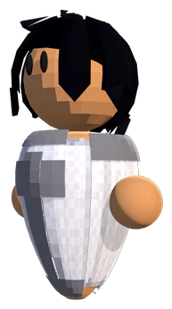

Brann
Brann (Trail Weaponsmith) gives 5 quest lines and keeps Brann's Trail Arms.
Quest lines
- Brann's Apprentice: Brann teaches crafting to anybody willing to work the forge. (8 steps)
- The Warlord's Iron: Brann wants the Scrap Warlord's horned helm taken off him properly. (4 steps)
- The Ancient Mask: Something is going on with the Mummies in the Red Desert, and Brann wants to know what. (4 steps)
- Hell's Bargain: Brann wants to know how the Unbound fights. (3 steps)
- Scrap and Sparks: Brann turns your spare gear into Scrap, and Scrap into a roll at the Forge. (3 steps)
Shop
Brann's Trail Arms: A starter weapon for each way of fighting.
Good work. I'll put that to use at the forge.Brann, on a quest turned in
Gallery







Trivia
Not written yet
Anything else worth knowing about Brann.